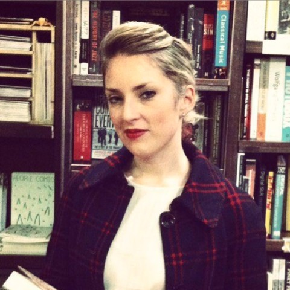

Simple tools that help community groups see — and show — the change they're making.
What we do
Most community groups are brilliant at doing the work and never get shown how to prove it. Funders ask for indicators, baselines and results frameworks — language built for organisations with a full-time measurement team, not a park cleanup committee or a street-level stokvel working from a phone.
Civic Atlas builds radically simple tools that put real impact monitoring — planning, tracking and reporting — into the hands of the people actually doing the work.
A phone-first tool that turns a plain-language idea into a theory of change, a handful of activities, and one number a month to track — all rolling up into a funder-ready annual report.
Prototype liveCivic Atlas is just getting started. This site is a placeholder — more tools, resources and writing for community groups and small NGOs are on the way.
In progressWhy it exists

Kate Lefko-Everett
Founder, Civic Atlas
Kate is a Cape Town–based social researcher who has spent nearly two decades designing, running and evaluating research on social change — from leading the South African Reconciliation Barometer at the Institute for Justice and Reconciliation, to social cohesion work with UCT and the UNDP, to advising corporate social investors on measurement and strategy.
Across all of it, the same pattern: the groups doing the most tangible good are the least equipped to report on it. Professional impact monitoring is a discipline with its own vocabulary, and the vocabulary keeps small organisations locked out of funding they've already earned.
Civic Atlas is her answer — take everything that actually matters in tracking impact, remove everything that doesn't, and put it in the hands of the people doing the work. If a committee can run a cleanup, it can track one. If it can track one, it can report one. And if it can report one, it can fund the next.
MSc Applied Social Research, Trinity College Dublin · formerly Institute for Justice and Reconciliation · published on social cohesion, migration and reconciliation · unapologetic lover of statistics.
Get in touch
Civic Atlas is a new initiative and this site is a work in progress. If you'd like to hear more or get involved, reach out.